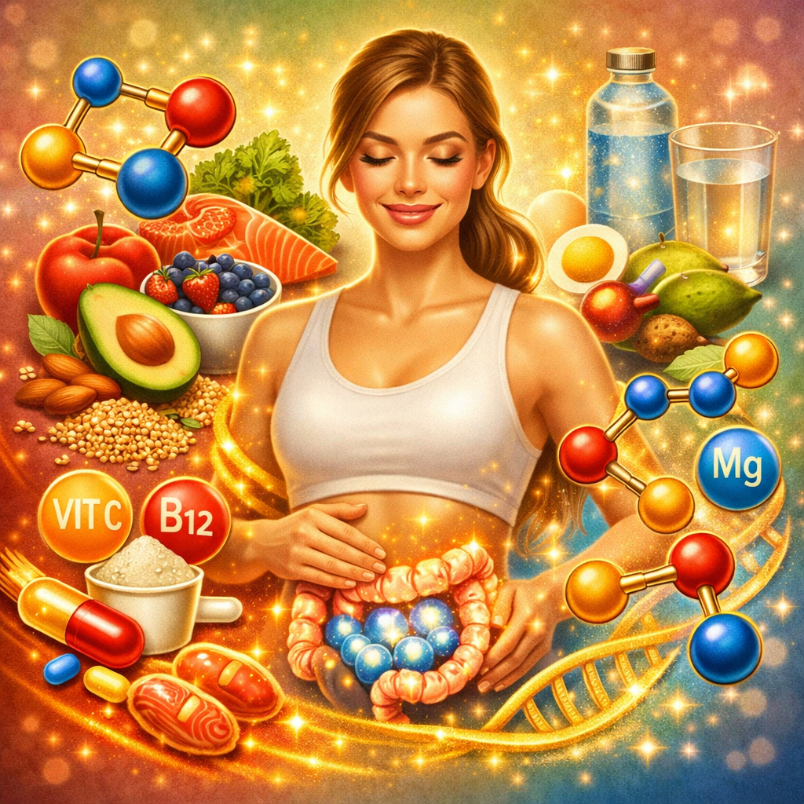

¿Qué es el colágeno hidrolizado?
El colágeno hidrolizado es colágeno que ha sido procesado para romper sus largas cadenas de proteínas en péptidos más pequeños. Este proceso, llamado hidrólisis, hace que el colágeno sea mucho más fácil de digerir y absorber por el organismo. Es básicamente una mezcla de péptidos de colágeno listos para ser utilizados.
🧬 Diferencia clave
Colágeno nativo: proteína grande difícil de absorber. Colágeno hidrolizado: péptidos pequeños que se absorben fácilmente en el intestino y llegan a la piel, articulaciones y huesos.
Beneficios comprobados
- Piel: Mejora la hidratación, elasticidad y densidad del colágeno dérmico
- Articulaciones: Reduce el dolor articular y mejora la movilidad
- Huesos: Aumenta la densidad mineral ósea
- Uñas y cabello: Fortalece uñas quebradizas y mejora el crecimiento capilar
- Masa muscular: En combinación con ejercicio, ayuda a mantener y ganar músculo
Dosis recomendada
| Objetivo | Dosis diaria | Duración mínima |
|---|---|---|
| Salud general | 2.5 - 5 gramos | Uso continuo |
| Piel antienvejecimiento | 5 - 10 gramos | 8 - 12 semanas |
| Articulaciones | 10 gramos | 12 semanas mínimo |
| Deportistas | 15 - 20 gramos | Uso continuo |
Mejores momentos para tomarlo
- En ayunas: Máxima absorción, ideal para piel y articulaciones
- Pre-entreno: Protege articulaciones durante el ejercicio
- Post-entreno: Ayuda a la recuperación muscular y de tendones
- Antes de dormir: Favorece la reparación nocturna de tejidos
Tipos de colágeno hidrolizado
Tipo I
El más abundante. Para piel, huesos y tendones.
Tipo II
Cartílago articular. Ideal para problemas de articulaciones.
Multi-colágeno
Mezcla de tipos I, II, III, V y X. Cobertura más amplia.
¿Cuándo se ven los resultados?
Los estudios clínicos muestran que los primeros resultados en la piel aparecen a las 4-8 semanas. Para las articulaciones, los beneficios se notan a partir de las 8-12 semanas de uso constante. La mejora en uñas y cabello suele ser visible en 2-3 meses.